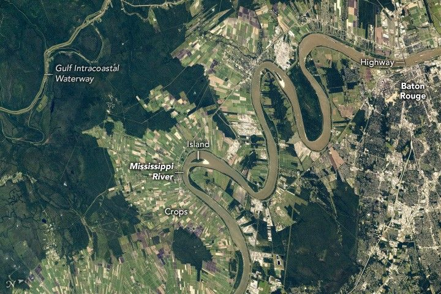

Meandering Through Baton Rouge
An astronaut aboard the International Space Station captured this photograph of the Mississippi River while orbiting over Louisiana. The storied Mississippi meanders north to south through the center of the image, carving through the southeastern Louisiana landscape. The river separates the urban areas of Baton Rouge to the east from the elongated agricultural fields to the west. Small islands within the river have been sculpted by the flowing waters.
The muted tan and white tones of the city’s streets and railroads highlight the layout of Baton Rouge, the capital of Louisiana. Blocks of neighborhoods lie near the major roadways, such as Interstate 10 that crosses the river. The Mississippi River transports and deposits nutrients, leading to nutrient-rich soils that support agriculture, as indicated by numerous fields on the western side of the bank. The main crop in this region is sugarcane, which is grown mostly in the state’s southern parishes.
The Gulf Intracoastal Waterway cuts through the western reaches (top-left) of the photograph. This waterway connects bayous and lakes in southern Louisiana that would otherwise be isolated, allowing for navigation and environmental connectivity. The Port Allen Lock provides a shortcut for barge traffic from ports located south-southwest of the Mississippi River.
Along the river, barges appear as small, elongated objects due to their wakes. The Mississippi River is one of the world’s most important waterways, connecting Minnesota to the Gulf Coast. Over 500 million tons of commodities travel along the Mississippi River each year, including soybeans, corn, and petroleum.